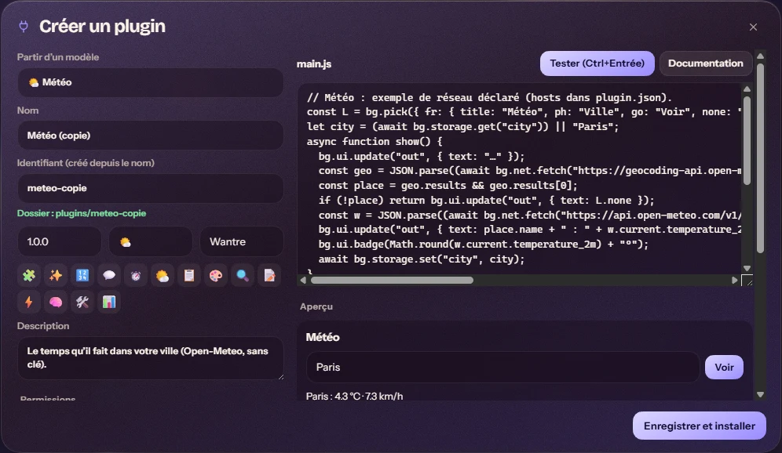
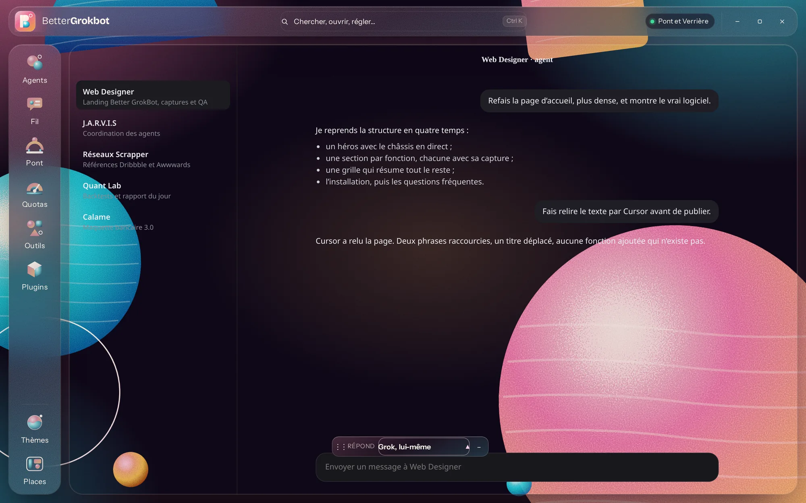
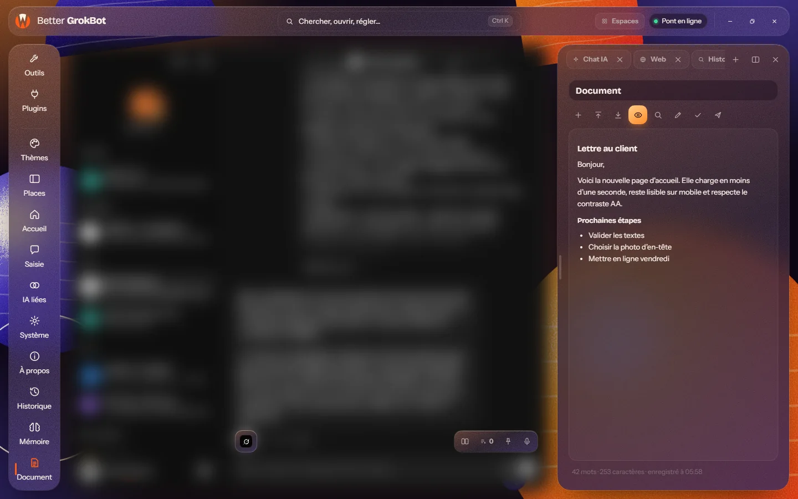
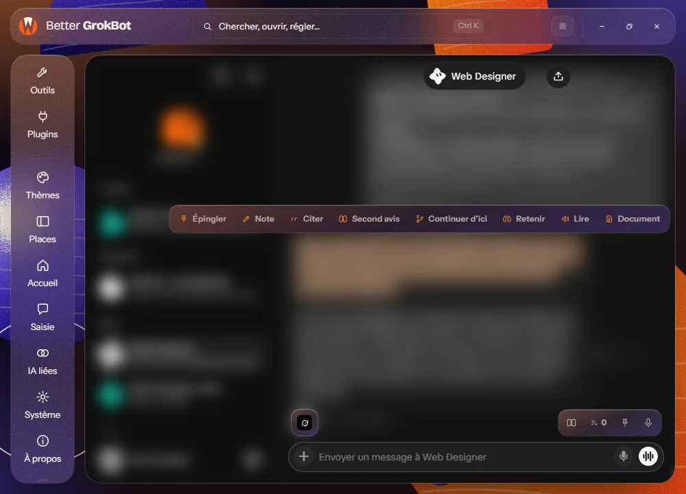
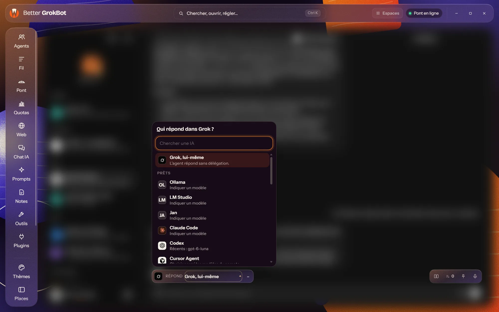
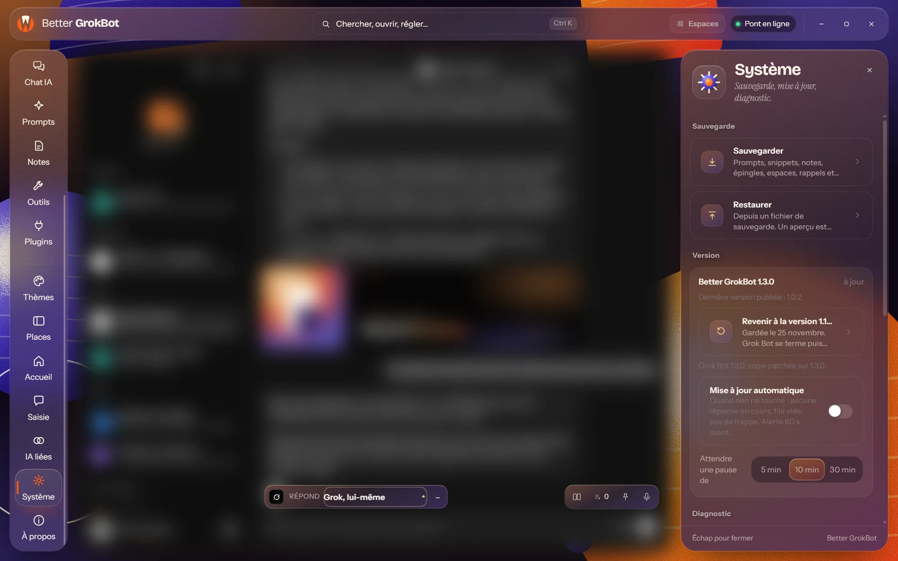
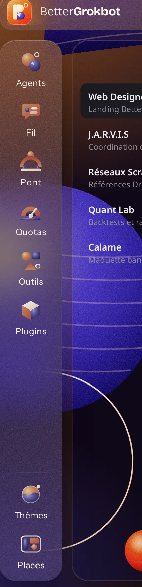
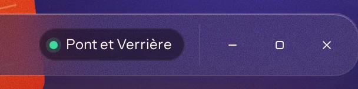

Um criador de plugins
Comece a partir de um modelo, dê um nome à sua ferramenta: o identificador é preenchido e verificado durante a entrada. Ícone, versão, permissões explicadas, editor e visualização ao vivo. Ctrl Entrée
Better GrokBot é uma cópia privada de Grok Bot. Ele adiciona uma barra de navegação, um Chat IA e um navegador da web próximo à conversa, uma paleta Ctrl K, a barra Responde para enviar uma mensagem para Cursor, Claude ou Codex, cotas ativas e atualizações que são instaladas por conta própria. A instalação original ainda permanece intacta.



Grok Bot.exe e app.asar são lidos em Programs\Grok Bot. Nada está escrito lá.
A cópia é instalada em Local\GrokBot-inprocess. O arquivo é ali reconstruído com a moldura.
A janela que abre é Better GrokBot. Seu Grok Bot original permanece lá, como está.
Acople uma janela aberta no PC: ocupa o lugar do Grok e continua utilizável. O Chat IA só a vê se o ativar (Cursor, Claude ou Codex): cada mensagem leva então uma captura dessa janela. O novo botão «Ligar conta» liga os seus fornecedores e a barra reordena-se arrastando.
Better fala francês, inglês, espanhol, alemão, italiano, português, holandês e polonês e segue o idioma de Windows. Cada plug-in é executado em um espaço isolado, com permissões claras, um criador, uma galeria e pacotes para arrastar para a janela. Capturas de tela reais de 1.5.

Comece a partir de um modelo, dê um nome à sua ferramenta: o identificador é preenchido e verificado durante a entrada. Ícone, versão, permissões explicadas, editor e visualização ao vivo. Ctrl Entrée

Cada plug-in é executado em seu próprio Worker e faz apenas o que declara. Nunca suas chaves, tokens ou arquivos.

Contador de palavras, respostas padrão, temporizador de foco, clima sem chave, conversa em Markdown. Um clique para instalar.

O idioma de Windows na primeira inicialização, a ser alterado em System. Seguem datas e números.

Arraste uma pasta, .zip ou .bgbplugin: manifesto verificado, permissões mostradas, confirmação, "Reiniciar agora".
Um histórico onde tudo pode ser pesquisado, uma memória criptografada que fica no PC, projetos vinculados ao GitHub, painel lateral de documentos e leitura em voz alta. Capturas de tela reais de 1.4; a conversa Grok está confusa.

Nome, profissão, preferências, memórias e perfis de armário em um cofre criptografado com sua conta Windows. Better prepare um breve contexto para anexar à mensagem, somente quando quiser.

Pesquise todas as conversas indexadas, títulos automáticos, pastas, tags e arquivos. Ctrl Maj F

Um painel lateral de escrita com visualização, pesquisa e edição por Grok. Salve em .md, .txt ou PDF. Ctrl Maj O

Selecione uma passagem: cite, lembre-se, leia em voz alta, envie para o Documento ou continue daqui com outro agente.

O círculo “Responde” e a barra direita permanecem 8 px acima do campo, mesmo com texto longo, imagem anexada ou janela estreita.
As versões 1.1 a 1.3 adicionam uma barra lateral de bate-papo para IAs vinculadas, um navegador da web com seleção de itens, um trilho de armazenamento e rolagem e atualizações abrangentes. Capturas de tela reais de 1.3; a conversa Grok está confusa.
Fale com Cursor, Codex, Claude Code ou com uma IA local em um painel lateral próximo a Grok. Escolha do modelo com logotipos, conversas mantidas no PC, Markdown e código para copiar, comparação lado a lado. Nada vai para Grok sem o seu clique. Ctrl Maj A

Uma página aberta ao lado da conversa. O seletor envia um elemento, seu texto e sua imagem para o campo de entrada ou a página inteira para Markdown. Ctrl Maj E

O mapa permanece fixo acima do campo de entrada, com granulação. A lista mostra os logotipos, separa as IAs prontas daquelas a serem vinculadas e é filtrada pelo teclado.

O nome permanece abaixo de cada ícone no modo Simples, nunca no modo Compacto. Fixar, montar, ocultar; o trilho rola com uma barra fina que não ocupa espaço.

Baixe, imprima sha256, feche, corrija e reinicie, sob um véu de transição. Opcionalmente, a atualização aguarda um momento de silêncio e avisa 60 segundos antes. A versão anterior permanece mantida.
A página Sobre reúne a versão, links e bibliotecas de terceiros com suas licenças. Better GrokBot é um projeto independente.

Mesmo Grok, mesma conversa, mesmos agentes. A moldura fica ao redor: uma barra de título limpa, uma grade de imagem à esquerda e painéis que deslizam da direita.

Trilhos e painéisO trilho permanece visível enquanto você escreve. Cada entrada abre seu painel sem sair da conversa e Esc o fecha.
Alterar paleta
A paleta reúne as oito categorias, as três paletas de cores e os gestos de conversação. Digite duas letras, Enter abre a linha correta.

A barra Responde é colocada logo acima do campo de entrada. Escolha Cursor, Claude ou Codex: seu agente Grok fica com a palavra e confia o trabalho ao modelo escolhido.
ask_external_ai do conector Better GrokBot.O painel Ponte mostra o estado do servidor local, os provedores encontrados neste PC e o modelo atribuído a cada agente.
route_for_agent.
O percentual Grok é lido dos dados que a conta já está enviando, sem abertura de faturamento. A data de redefinição segue.

Grok continua sendo o agente que fala com você. As outras IAs vêm ajudá-lo, somente quando você decidir.
Escolha uma paleta aqui: a captura muda, e esta página também. Na aplicação o grão, a decoração e o movimento são regulados separadamente.
#better-grokbot-root.

Layout, plugins, conversa, gestos rápidos, conector. Cada cartão mostra a tela real.

Compacto: trilho de 92 px e painel de 332 px. Conforto: 108 px e 388 px. Arraste uma entrada de trilho para alterar sua ordem.

Mostrar ou ocultar uma entrada de trilho. Um plugin também pode ter como alvo o CSS central, onde a conversa ocorre.

Retomar conversa coloca o cursor no discador. Compartilhar abre o compartilhamento de Grok, caso contrário, copia o nome do agente.

Seis movimentos rápidos: fornecedores, roteamento, sandbox, Canopy, cota e coluna de agente.
Para permitir que seus agentes Grok vejam as ferramentas Better, adicione este comando aos aplicativos do Connect.
BetterGrokBot.exe -mcpask_external_aiatribui uma solicitação ao modelo roteadosandbox_listliste o sandbox


Logotipo, pesquisa Ctrl K, emblema de status da ponte e botões de janela. A barra nativa de Windows desaparece.
Formas, logotipo e assinatura na abertura. As animações são cortadas em Temas e a configuração de redução de animação do sistema é respeitada.
Programs\Grok BotUm único arquivo: Patch GrokBot recupera a versão mais recente, verifica sua impressão digital, fecha Grok Bot, mantém a versão atual para reversão, aplica o patch e reinicia. O botão “Atualizar” do aplicativo passa por ele. A desinstalação remove a cópia, nunca Grok Bot.

Patch-GrokBot.exe, sempre a versão mais recente. Windows pode exibir SmartScreen porque o arquivo não está assinado: "Informações adicionais" e depois "Executar mesmo assim".O que a cópia faz e o que não faz.
Não. Patch GrokBot lê Programs\Grok Bot sem escrever. Tudo o que muda fica na cópia, em Local\GrokBot-inprocess.
Não para pontes CLI: se Cursor, Claude, Codex, Gemini, Copilot ou OpenCode estiverem instalados e conectados a este PC, Better os utilizará como estão. Para um provedor com chave, a chave presa permanece criptografada.
Não é oferecido. O painel Ponte mostra-o como ausente, com um botão para vinculá-lo assim que for instalado.
Ele fornece aos seus agentes Grok as ferramentas de Better, incluindo ask_external_ai. Sem ele, a barra Responde não pode confiar o trabalho a outro modelo. O comando é copiado do painel Ponte.
A porcentagem Grok é lida dos dados que a sessão já está recebendo. Para pontes interligadas, o medidor aparece quando a CLI publica um número, caso contrário, o mapa o indica.
Não: Grok não permite limpar o histórico na nuvem e Better não afirma fazê-lo. Para retomar a conversa, basta colocar o cursor no discador.
Sim, em Temas, com Animações. O grão e a decoração geométrica são cortados separadamente. A configuração de redução de animação de Windows é respeitada.
Não. É sob licença proprietária Wantre, todos os direitos reservados: o download e o uso pessoal são gratuitos, mas a redistribuição, modificação, revenda ou reutilização do código e da marca requerem o consentimento por escrito de Wantre.
Abra Patch GrokBot e clique em Desinstalar. A cópia é removida. Grok Bot, ele não é afetado.
Better GrokBot está abaixo de licença proprietária Wantre — todos os direitos reservados. Download gratuito e uso pessoal. A redistribuição, modificação, descompilação para fazer um trabalho derivado, revenda ou reutilização do código ou marca registrada requer o consentimento por escrito de Wantre. O software é fornecido como está, sem garantia. Projeto independente, não afiliado a xAI, X ou Grok Bot; suas marcas pertencem aos seus proprietários.
Uma cópia privada, que pode ser removida com um clique, que deixa o original intacto.
Windows, .NET 8, WebView2 e Node.